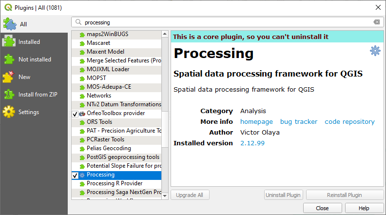
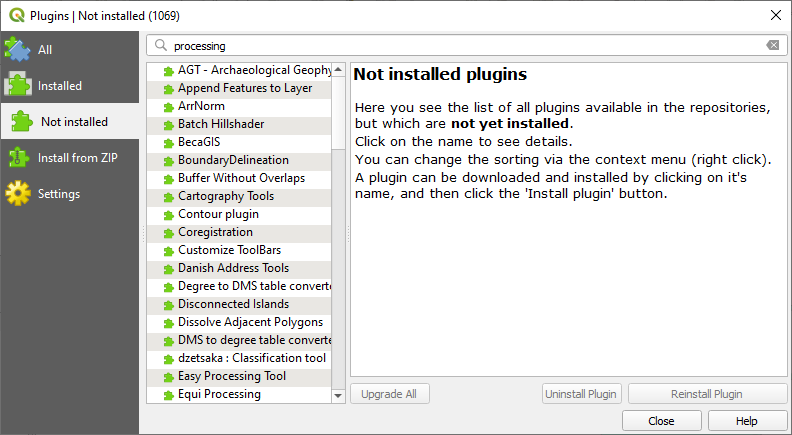
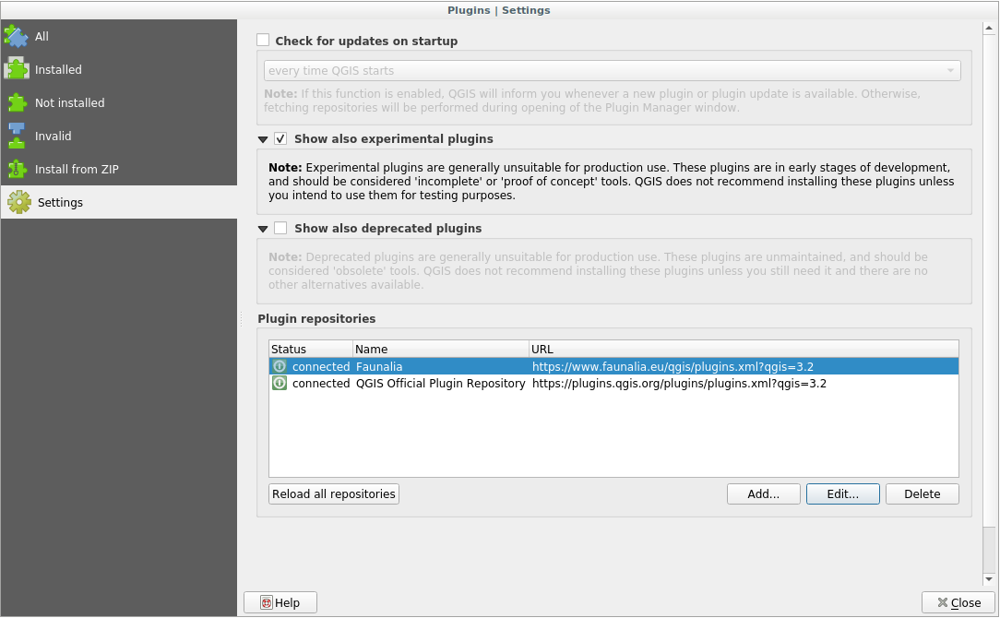

9.1. သင်ခန်းစာ - Plugin များ ထည့်သွင်းခြင်းနှင့် စီမံခန့်ခွဲခြင်း (Lesson: Installing and Managing Plugins)
Plugin များကိုစတင်အသုံးပြုရန် ၎င်းတို့ကို မည်သို့ ဒေါင်းလုဒ်ပြုလုပ်ရမည်၊ မည်သို့ ထည့်သွင်းရမည်နှင့် မည်သို့ ဖွင့်ပေးရမည်ကို သိရှိရန် လိုအပ်ပါသည်။ ထိုသို့လုပ်ဆောင်ရန် Plugin Installer နှင့် Plugin Manager ကို မည်သို့အသုံးပြုရမည်ကို လေ့လာရမည်ဖြစ်သည်။
ဤသင်ခန်းစာအတွက် ရည်မှန်းချက်- QGIS plugin စနစ်ကို နားလည်စေရန်နှင့် အသုံးပြုတတ်စေရန်
9.1.1. ★☆☆ လိုက်လုပ်ကြည့်ပါ - Plugin များ စီမံခန့်ခွဲခြင်း (Follow Along: Managing Plugins)
Plugin Manager ကိုဖွင့်ရန် ကိုနှိပ်ပါ။
ပွင့်လာသော dialog ထဲတွင် Processing plugin ကိုရှာဖွေပါ-
 အဆိုပါ plugin ၏ဘေးရှိ အကွက်ထဲတွင် click နှိပ်ပြီး ၎င်းကို ပိတ်ရန် အမှန်ခြစ်ဖြုတ်ပါ။
Close ကိုနှိပ်ပါ။
Menu ထဲတွင် ကြည့်လိုက်ပါက Processing menu မရှိတော့သည်ကို တွေ့ရပါလိမ့်မည်။ ဆိုလိုသည်မှာ ယခင်ကအသုံးပြုခဲ့ပြီးသော processing function တော်တော်များများသည် ပျောက်ကွယ်သွားမည်ဖြစ်သည်။ ဥပမာ- နှင့် menu များကို ကြည့်ပါ။ ထိုသို့ဖြစ်ရခြင်းမှာ ၎င်းတို့သည် Processing plugin ၏တစ်စိတ်တစ်ပိုင်းဖြစ်ပြီး အသုံးပြုနိုင်ရန်အတွက် Processing plugin ကိုဖွင့်ပေးရန်လိုအပ်သောကြောင့်ဖြစ်သည်။
Plugin Manager ကို ထပ်မံဖွင့်ပြီး Processing plugin ၏ဘေးတွင် အမှန်ခြစ်ပြီး ပြန်ဖွင့်ပေးပါ။
Dialog ကို ပိတ်လိုက်ပါ။ Processing menu နှင့် function များကို ထပ်မံ၍အသုံးပြုနိုင်မည်ဖြစ်သည်။
9.1.2. ★☆☆ လိုက်လုပ်ကြည့်ပါ - Plugin အသစ်များထည့်သွင်းခြင်း (Follow Along: Installing New Plugins)
ဖွင့်ခြင်း ပိတ်ခြင်း ပြုလုပ်နိုင်သည့် plugin များစာရင်းသည် လက်ရှိ install လုပ်ထားပြီးသား plugin များထဲတွင်ဖြစ်ပါသည်။ Plugin အသစ်များကို install ပြုလုပ်ရန်-
Plugin Manager dialog ထဲတွင် Not Installed option ကိုရွေးပါ။ Install ပြုလုပ်နိုင်သော plugin များကို ဤနေရာတွင် ပြသပါလိမ့်မည်။ အဆိုပါစာရင်းသည် သင်၏ရှိနေပြီးသား system setup ပေါ်တွင် မူတည်ပြီး ပြောင်းလဲမှုရှိနိုင်ပါသည်။
 စာရင်းထဲတွင် Plugin ကို select ပြုလုပ်ပြီး ၎င်း plugin နှင့်ပတ်သက်သောအချက်အလက်များကို ရှာဖွေပါ

Plugin panel အောက်ရှိ Install Plugin ခလုတ်ကို နှိပ်ပြီး သင်စိတ်ဝင်စားသော plugin (များ) ကို install ပြုလုပ်ပါ။
Note
အကယ်၍ plugin တွင် အမှားအချို့ရှိနေလျှင် ၎င်းကို Invalid tab ထဲတွင် စာရင်းပြုစုထားမည်ဖြစ်သည်။ ထို့နောက် အမှားအယွင်းကို ဖြေရှင်းရန် plugin ဖန်တီးသူထံသို့ ဆက်သွယ်နိုင်မည်ဖြစ်သည်။
9.1.3. ★☆☆ လိုက်လုပ်ကြည့်ပါ - ထပ်ဆောင်း Plugin သိုလှောင်ခန်းများကို ပြင်ဆင်သတ်မှတ်ခြင်း (Follow Along: Configuring Additional Plugin Repositories)
Install ပြုလုပ်နိုင်သည့် plugin များသည် သင်အသုံးပြုရန် ပြင်ဆင်သတ်မှတ်ထားသော plugin repositories ပေါ်တွင် မူတည်ပါသည်။
QGIS plugin များကို online repository များတွင် သိမ်းဆည်းပါသည်။ Default အားဖြင့် တရားဝင် repository တစ်ခုတည်းသာ active ဖြစ်နေပါသည်၊ ဆိုလိုသည်မှာ ထိုတရားဝင် repository တွင် ဖြန့်ချိထားသော plugin များကိုသာ အသုံးပြုနိုင်ပါသည်။ ရရှိနိုင်သော tool များ ကွဲပြားများပြားစွာရှိသောကြောင့် ထို repository တွင် သင်လိုအပ်သည့်အရာအများစု ရရှိနိုင်ပါသည်။
သို့ရာတွင် default plugin များအပြင် နောက်ထပ် plugin များကိုစမ်းကြည့်ရန် ဖြစ်နိုင်ပါသည်။ ဦးစွာ ထပ်ဆောင်း repository များကို ပြင်ဆင်သတ်မှတ်ပါမည်။ ထိုသို့လုပ်ဆောင်ရန်- #. Plugin Manager dialog ထဲရှိ Settings tab ကိုဖွင့်ပါ

Repository အသစ်တစ်ခု ရှာဖွေရန်နှင့် ထည့်သွင်းရန် Add ကိုနှိပ်ပါ။
ပြင်ဆင်သတ်မှတ်လိုသော repository အသစ်အတွက် အမည် တစ်ခုနှင့် URL တစ်ခုပေးပြီး Enabled checkbox တွင် အမှန်ခြစ်ခြစ်ထားပါ။

ပြင်ဆင်သတ်မှတ်ထားသော Plugin Repositories များစာရင်းထဲတွင် plugin repo အသစ်ကို တွေ့ရပါလိမ့်မည်
 စမ်းသပ်ဆဲ Plugin များကို ပြသရန် Show also experimental plugins checkbox တွင် အမှန်ခြစ်ပေးနိုင်ပါသည်။
Not Installed tab ကိုပြန်သွားကြည့်လျှင် install ပြုလုပ်ရန်အတွက် ထပ်ဆောင်း plugin များကို မြင်တွေ့ရမည်ဖြစ်သည်။
Plugin တစ်ခုကို install ပြုလုပ်ရန် စာရင်းထဲရှိ ၎င်း plugin ပေါ်တွင် click နှိပ်ပြီး Install plugin ခလုတ်ကိုနှိပ်ပါ။
9.1.4. နိဂုံးချုပ် (In Conclusion)
QGIS ထဲတွင် plugin များ install ပြုလုပ်ခြင်းသည် လွယ်ကူရိုးရှင်းပြီး ထိရောက်မှုရှိပါသည်။
9.1.5. နောက်ထပ် ဘာအကြောင်းအရာလဲ (What’s Next?)
နောက်ထပ်အနေဖြင့် အသုံးဝင်သော plugin အချို့ကို ဥပမာများအနေဖြင့် မိတ်ဆက်ပေးသွားမည်ဖြစ်ပါသည်။